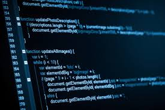
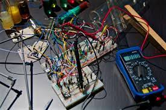

|
 |
| Universitas Ahmad Dahlan (disingkat sebagai UAD) adalah sebuah perguruan tinggi swasta yang berdiri di Yogyakarta, Indonesia. Universitas Ahmad Dahlan beralamat di Jl. Kapas No.9, Semaki, Kec. Umbulharjo, Kota Yogyakarta, Daerah Istimewa Yogyakarta yang didirikan pada tanggal 19 Desember 1994. Universitas Ahmad Dahlan (UAD) merupakan pengembangan dari Institut Keguruan dan llmu Pendidikan (IKIP) Muhammadiyah Yogyakarta. Institut Keguruan dan llmu Pendidikan Muhammadiyah Yogyakarta sebagai lembaga pendidikan tinggi merupakan pengembangan FKIP Muhammadiyah Cabang Jakarta di Yogyakarta yang didirikan pada tanggal 18 November 1960. |
FKIP Muhammadiyah merupakan kelanjutan kursus BI Muhammadiyah di Yogyakarta yang didirikan tahun 1957. Pada waktu itu kursus BI memiliki jurusan Ilmu Mendidik, Civic Hukum dan Ekonomi.Pada tanggal 19 Desember 1994 dengan Surat Keputusan (SK) Menteri Pendidikan dan Kebudayaan Republik Indonesia Nomor: 102/D/0/1994 ditetapkan bahwa IKIP Muhammadiyah Yogyakarta beralih fungsi menjadi Universitas Ahmad Dahlan. |
| Beberapa jurusan di UAD |
| TEKNIK INFORMATIKA |
TEKNIK INDUSTRI |
|  |
|
| Teknik Informatika adalah salah satu jurusan di fakultas teknik yang mempelajari bagaimana penerapan logika matematika dalam pengelolaan informasi yang dapat meliputi transformasi data atau pengolahan fakta-fakta simbolik dengan memanfaatkan teknologi komputer seoptimal mungkin.Prospek Kerja Software Engineer, System Analyst dan System Integrator, Konsultan IT, Database Engineer / Database Administrator, Web Engineer / Web Administrator, Computer Network / Data Communication Engineer, Game Developer, Programmer dan yang lainnya |
Teknik Industri atau Industrial Engineering merupakan bidang ilmu yang mendalami tentang proses industri melalui kacamata teknik dan manajemen. Tak heran, jika Teknik Industri kerap mendapatkan julukan oleh mahasiswanya sebagai jurusan yang ‘nggak teknik banget’. Padahal, jurusan ini merupakan anak dari jurusan Teknik Mesin.Pasalnya, pelajaran yang ada pada jurusan Teknik Industri menekankan pada sisi manajemen dari suatu industri. Sehingga, kamu tidak hanya dituntut untuk mengerti seluk-beluk sebuah mesin manufaktur, tetapi juga harus memahami sistem manajemen dari sebuah pabrik. |
| TEKNIK ELEKTRO |
TEKNOLOGI PANGAN |
|  |
 |
| eknik Elektro (Electrical Engineering) disebut juga Teknik Listrik / Elektronika. Jurusan atau program studi ini adalah bagian dari bidang teknik (engineering) yang mempelajari, mendesain dan mengaplikasikan komponen dan sistem yang memanfaatkan listrik (electricity), elektronika (electronics) dan electromagnetism. |
eknologi pangan adalah program studi atau jurusan yang mempelajari tentang berbagai hal tentang bahan makanan. Seperti sifat fisik atau sifat kimia dari bahan makanan sampai belajar tentang mikrobiologis. Dengan bekal pengetahuan dan kemampuan yang kamu miliki sebagai lulusan teknologi pangan. |
| Teknik KIMIA |
|
| Teknik Kimia merupakan program studi yang mempelajari teknologi perancangan pabrik. Pabrik yang dirancang dapat berupa pabrik kimia, bioproses, makanan, dan masih banyak yang lainnya. Hampir seluruh pabrik yang ada di dunia dirancang oleh sarjana Teknik Kimia |